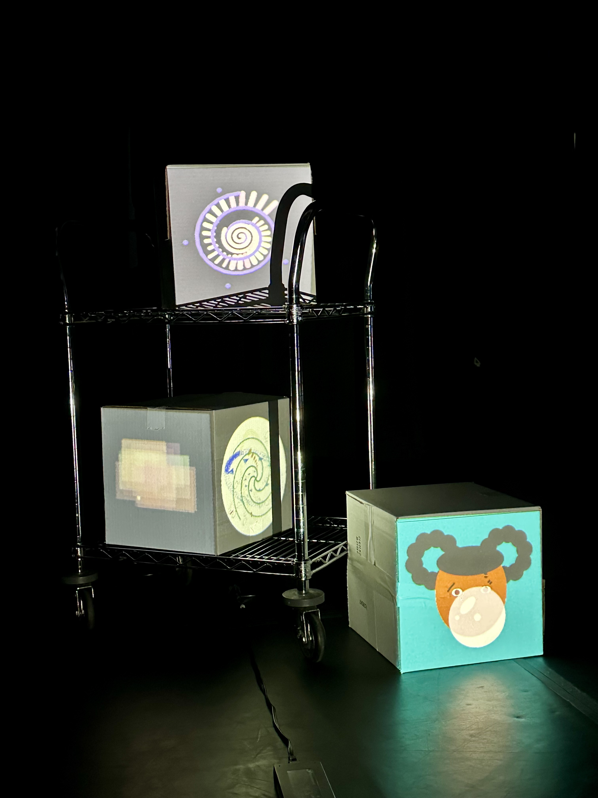
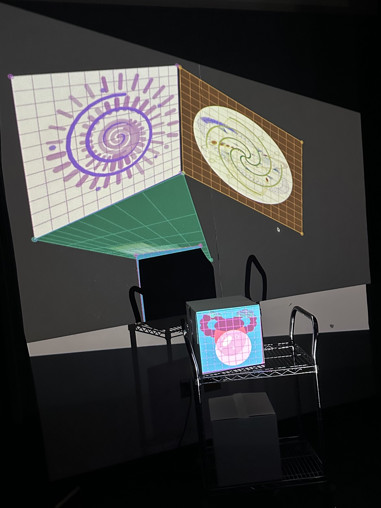
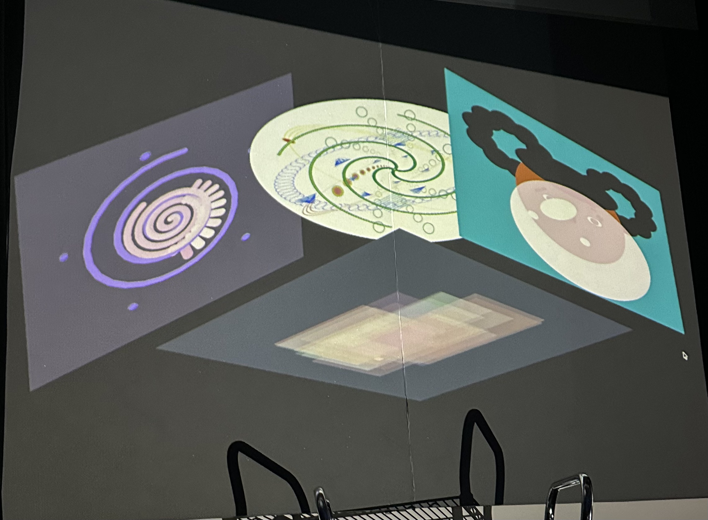
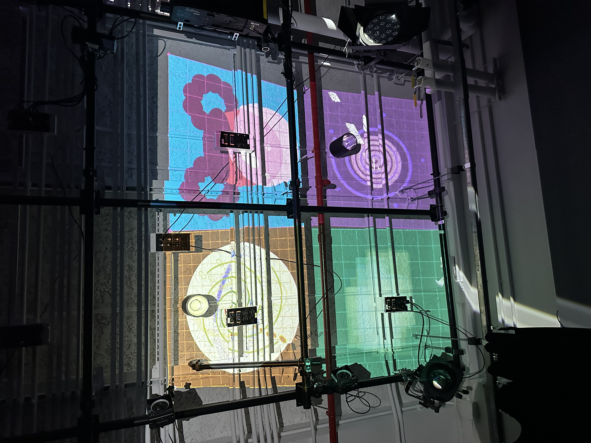
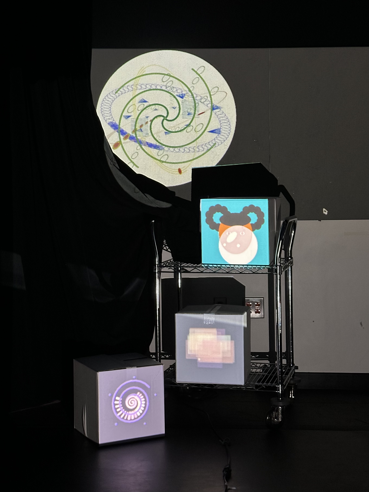
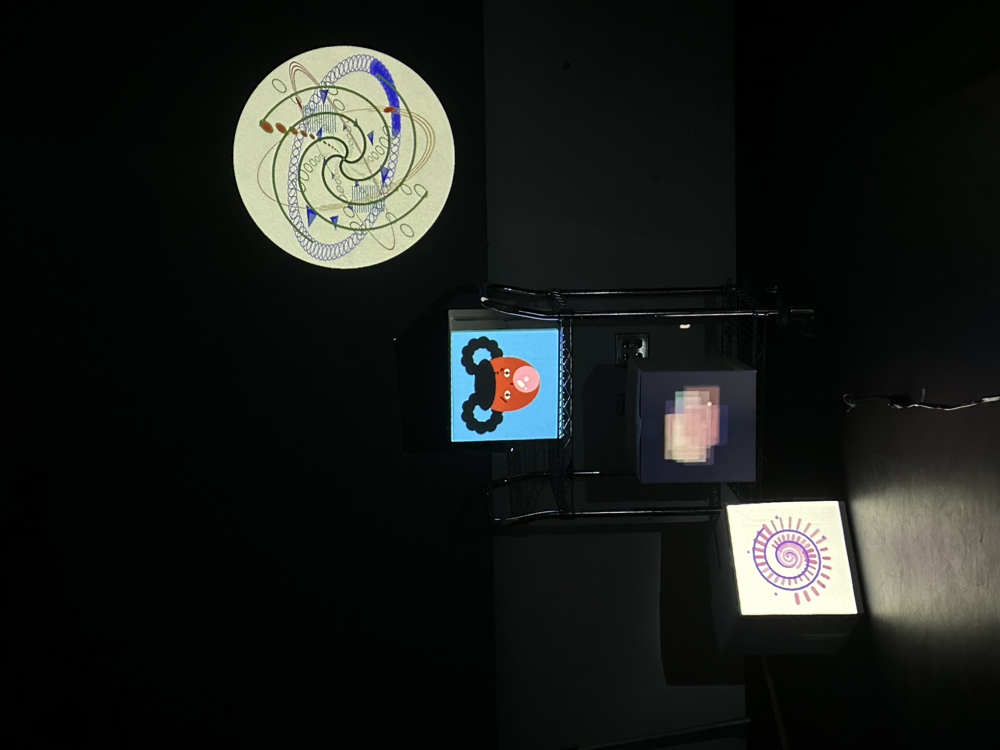

In our first projection mapping workshop, we were introduced to mapping digital animations onto physical surfaces using a projector. We experimented with the provided template and learned how to adjust the corners and positions of our sketches to fit different surfaces. It was interesting to see how projection mapping worked compared to displaying animations on a computer screen.
During our second projection mapping workshop, my group and I finally got to see all of our individual animations come together. Before class, we had each tried to adapt our sketches to the provided template. At the beginning of class, we combined our code, and three of the four sketches appeared successfully. However, the last sketch, which included a video, wasn't showing up even though it worked on my group member's computer.
After quite a bit of debugging and getting help from Melody, we realized that we were missing the p5.Polar library that the last sketch needed. Once we added it and fixed a few other details, all four sketches finally appeared. The last sketch looked a little different from its original version, but we were relieved that everything was running together. This made me realize how challenging it can be to combine code that works individually into one project.
Once we got past the coding issues, we experimented with different ways to display our animations. We started by projecting onto individual boxes, then brought over a cart to arrange them at different heights and positions. We also tried projecting onto the wall in a box-like arrangement, displaying each sketch from a different perspective, and later experimented with the ceiling and a more organized layout.
My favorite part was calibrating the sketches to fit the different surfaces. Compared to viewing animations on a computer screen, projection mapping made me think more about the physical environment and how placement, scale, and angles affect the visuals. Towards the end, we also discovered that lowering the projector's brightness helped the animations stand out more against the background. I initially assumed that brighter would be better, so this was an interesting discovery.
I really enjoyed experimenting with different arrangements and seeing how our animations could become part of a physical installation. Although the coding and debugging took more effort than I expected, it was satisfying to finally see everything work together. This workshop also reminded me how important collaboration and problem-solving are when working on a group project.





